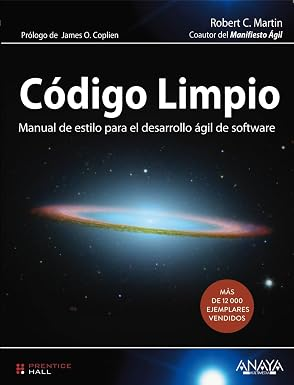
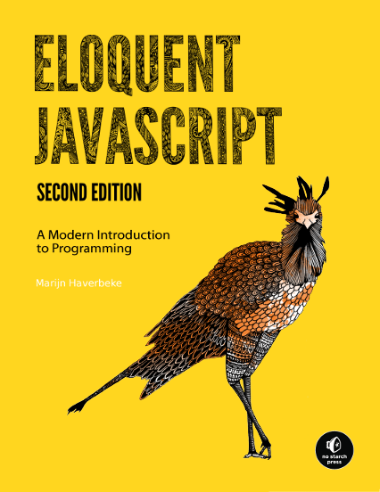

Clean Code
Autor: Robert C. Martin
Livro essencial para aprender boas práticas de programação, escrita de código limpo, organização e manutenção de software.
Livros recomendados para estudantes e profissionais da área de Tecnologia da Informação.

Autor: Robert C. Martin
Livro essencial para aprender boas práticas de programação, escrita de código limpo, organização e manutenção de software.
Autor: Aditya Bhargava
Explica algoritmos e estruturas de dados de forma visual e acessível para iniciantes em programação.

Autor: Marijn Haverbeke
Apresenta os conceitos fundamentais do JavaScript, lógica de programação e desenvolvimento web moderno.
Autor: Steve Krug
Livro clássico sobre usabilidade, experiência do usuário e criação de interfaces simples e eficientes.
Autor: Andrew S. Tanenbaum
Aborda os principais conceitos de redes, protocolos, comunicação de dados e infraestrutura de internet.